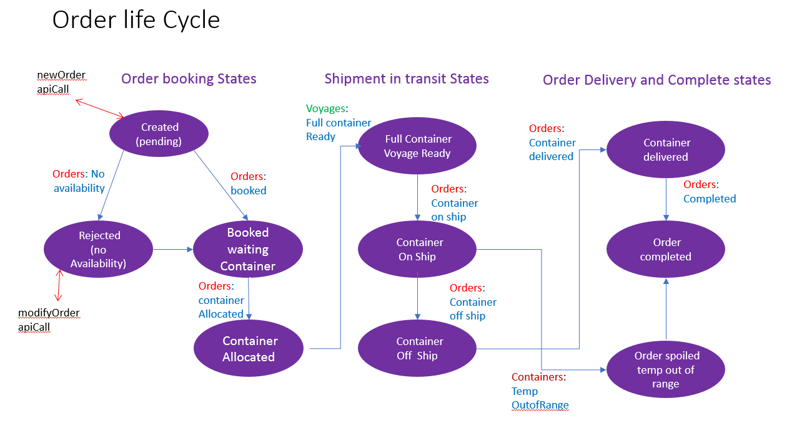

Design considerations
Microservices for shipment order handling
In this section we provided additional explanations on the organization of the shipment handling processing into a set of EDA coupled microservices. This will include: some further explanation of the concept behind each of the proposed microservices user stories for the microservices * explanation how this uses and benefits from key EDA patterns - event sourcing and Command Query Responsibility Separation (CQRS).
Orders Microservice: Place Shipment Order - user stories
As a manufacturer of pharmaceutical goods with production location XXX near port UU, I repeatedly identify new potential retailers for my product - for example a retailer with a distribution hub at location YYY near port VV - and I need to place an order with shipping company (K.Containers) to have a container of my products picked up from location XXX and delivered to location YYY. At the time I request a shipment booking I always know: the pickup location XXX and its adjacent port UU the delivery location YYY and its adjacent port VV the earliest date at which a container's worth of my products could be available for pickup at XXX the latest date by which it needs to be delivered to my target retailer at location YYYY
Here is an example of screen I may use:

Since my product can degrade if exposed to extreme temperatures, I expect transport to be in a refrigerated container and can supply a specific temperature range to be maintained while my goods are in transit.
If the shipping company (K.Containers) has no available capacity to ship a container meeting my timing and delivery requirements, I expect the order request to be rejected. This will enable me to consider other shipping arrangements or renegotiate dates with my target retailer.
If the order can be placed, I will want the response from the shipping company (K.Containers) to include a committed reasonable price for the shipment to be specified. In addition, I would like to know on confirmation of the order: the expected pickup and delivery dates (this will help close my agreement with the proposed retailer receiving the goods) the identity of the ship and scheduled voyage which will transport my container (this will help me with insurance considerations) * an orderID which I can use with the shipping company subsequently to track the order
In general any pickup any delivery dates after my product availability and before the customer required delivery date are acceptable.
I know that I will be expected to document properties of my product including specifications of its nature and origin, weight transported, recipient for whom it is intended etc... for Customs and export processing and for possible use by the shipping company BUT is not essential for an initial implementation of the order placement microservice.
Orders Microservice: Track Order user story
As a manufacturer of Pharmaceutical goods who has placed a shipment order with a shipping company (K.Containers) and received an order ID for that shipment, I may repeatedly request for tracking in that orderID and expect to be told the current state and progress of the order.
For tracking requests made before the goods are picked up from my facility, this will be primarily to confirm the order and to hear about any changes in expected pickup date or expected delivery date which could have resulted from delay of the assigned ship in earlier voyages or other difficulties. Having this information will help me maintain good relations with the target retailer expecting to receive the goods.
For tracking requests made while my goods are in transit or have been delivered, I expect to receive full information of the history of the container carrying my goods including: whether it has been picked up from my manufacturing site XXX by trucking / land transport and delivered to source port UU whether it has been cleared for export and loaded onto the designated ship the location history of the ship if the ship has arrived at destination port VV, whether my goods are unloaded and cleared by customs whether a trucking / land transport has picked up the container and delivered to the retailer's location YYY a full temperature and gps history of the container for the complete transit end to end.
Having this tracking information will give me confidence that my goods have not been damaged in transit and are or soon will be properly delivered to the expected recipient in good order.
In an initial implementation of the track order microservice, some of this event information - particularly relating to customs, export, ship loading an unloading at port and trucking land transport operations may be missing.
Order life cycle

Voyages Microservice: Create new order and Assign to Voyage - user story
As the person in Container Shipping company K.Containers reponsible for keeping track of shipment orders we have accepted and responded to customer order requests for new shipment orders, I need to be able to: determine reliably whether there is free capacity on a particular scheduled voyage to accomodate an additional container AND IF space is available on that voyage ... * create a unique new orderID for the shipment this shipment can be accepted * set up persistent information with the order which will help me ensure that shipment operations with K.Containers are properly set up for it. This will include: * the pick up location and port. * expected pickup date. * the delivery location and port. * the voyageID on which this container is now booked. * the shipID for that voyage. * associate this new orderID with the voyage. * decrement any free space count for that voyage.
Know that a specific voyage can accomodate an additional container for a specific order allows me to respond positively to a customer request to place a new shipment order.
Having an accurate free space count associated with each voyage will tell me when a voyage is fully booked and cannot accept any further orders. It will also warn me when a voyage is underbooked; using that information I can consider getting K.Containers to market additional capacity or lower its prices.
Having a list of all booked orders on a voyage will enable me to generate a manifest of all containers expected or in transit on that voyage. This is required as part of the customs and export clearances and also for review and approval by ship operations to ensure that the cargo loading for this voyage is acceptable/safe.
The attributes associated with new order are used to schedule and trigger and monitor: trucking operations, customs and export operations, pickup and delivery confirmations, ship load and unload operation.
Voyage Microservice: find voyages for port pair and time interval - user story
As the person in Container Shipping company, K.Containers, reponsible for keeping track of shipment orders we have accepted and responding to customer order requests for new shipment orders, I need to be able to query the voyages records to find a list of voyages for a specific port-pair, with source port loading after a specifed start date and destination port unloading before a specified end date. This is the set of voyages I need to check for available capacity (using created new order and assign to voyage) when trying to determine whether a new shipment request from a customer can be satisfied by K.Containers shipping or not.
Fleets/Ships Microservice - concept
This service keeps track of each of the container ships available for transporting containers. Each ship has a unique shipID. The information about each ship is kept in a keystore keyed by shipID.
The ships may be organized into Fleets.
A ship record is created when a new ship is commissioned, joins the fleet and becomes available to carry containers as part of the shipping service. We can think to this as being triggered by some "New ship event" on the event bus.
Each ship record will carry attributes of the ship including its full name and registry. An important attribute from the point of view of processing shipment orders and quote requests is the carrying capacity of the ship. How many containers can it carry on any voyage? We can accept additional shipment bookings only for voyages where there will be space available to carry them on the ship.
In addition to its ShipID Key and attributes including capacity (number of containers it is designed to carry). As part of the other important information is the events related to the ship to record things which have happened to that ship. This list will include: GPS lat/log position reports of the position of the ship a different points in time. Events of the ship starting or completing a specific scheduled "voyage" - sailing from source port to destination port as scheduled for this ship. Clearances for the ship to enter or leave territorial waters of a nation or port. Arrival at a port dock and start or completion of a ship load / load operation at the dock.
Organizing the ship record in this way is an example of event sourcing; all event relating specifically to a ship are saved. Using queries with time stamp, shipID it is possible to get a complete history of all events relevant to it.
Voyages microservice - concept
This service keeps track of each scheduled, current or completed voyage of a container ship, being loaded with containers at a source port, sailing to a destination port and having onboard containers unloaded there.
The life cycle of a voyage is as follows: Voyages are scheduled some number of months in advance - typically in response to some predictive model for how much demand is expected for shipment taffic in the future for a specific source port destination port pair. * each voyage is assigned a unique voyageID at the time it is created. Each voyage is assigned to be handled by a specific ship, and will have expected dates for: * start and completion loading at the source port. * leaving the source port and travelling to the destination port. * arrival into unloading dock at the destination port and start and completion of unloading at that port. When a voyage is scheduled and before it is actually in progress, bookings (and cancellations) to carry containers can be accepted. * the capacity of the assigned ship determines the maximum number of containers which can be carried on the voyage; available capacity on the voyage must be tracked and booking accepted only until the voyage is fully booked When the expected source port loading date is reached and the voyage actually begins, there may be voyage events recording actual dates for arrival at the destination port etc..., which may be different from the expected dates. * since each ship is expecting to execute a sequence of voyages, delays on one voyage may force rescheduling expected dates or cancellations of follow on voyages. * A voyage is eventually completed. The voyage record, keyed by voyageID, will continue to be important for a while for auditing and billing activities but will eventually be archived.
Voyage records play an important role in: * processing shipment quote requests - when could a container be delivered to this destination from this source? * processing a shipment order - when a container is actually booked for a specific voyage * providing a current manifest of which orders/containers are present or expected on the ship for a specific voyage
Command Query Responsibility Separation (CQRS) may be important to the design of the voyage microservice to handling the processing above with ideal scalability and responsiveness.
It is important that from the perspective of a single voyage, that at all time there is an accurate and reliable list of which orders have been accepted for the voyage and what is the ammount of capacity still available on that voyage for future bookings. Hence there needs to be an atomic method assign_order_to_voyage( ) which adds the order event to the voyage and decrements the free capacity count by one. Since this operation updates the voyage record, it is a command in the CQRS sense.
When responding to a request for quote or getting a list of voyages which could be candidate placements for a booking, an important query is:
Find_Voyages_With_Capacity() : i.e. find all voyages from source port A to destination port B
.. which will leave the source port AFTER goods available date
.. AND will arrive at destination port BEFORE goods delivery required date
.. AND have bookable freespace
Any such voyage can be used to respond to a quote or used as a target to try assigning a booking.
If requests for shipment quotes are significantly more frequent than actual bookings, one could provide maximal scalability and rsponsiveness by doing a fully separated CQRS design. The actual table of voyages with accurate and realiable capacity counts for each voyage would be handled in an orders command service with n assign_Order_To_Voyage( ) command api. Requests to check for voyages likely to have availabity for a specific port piar in a specific time window, could be handled by a separate query service with voyage information indexed by port-pair and sorted by departure/arrival date.
Whenever the Assign_Order_to_Voyage( ) command succeeds, it generates a new_order_booked event on the event bus. The Find_Voyages_with_Capacity( ) service subscribes to these events and uses them to keep its capacity information on each voyage approximately and eventually correct. This illustrates use of the CQRS pattern to allow the available space query service to be scaled over many processors while ensuring reliable processing of actual booking commands against individual voyages.
In addition to capacity, each voyage record will maintin a list of all Orders assigned to to it, allowing generation of a full manifest for expected or actual contents of the ship. In the simplified example we are developing here, we do not worry about order cancellations or modifications; in a pratical production implementation the voyage record would also hold order cancel and order modify event using event sourcing to generate a reliable current manifest from the voyage event history.